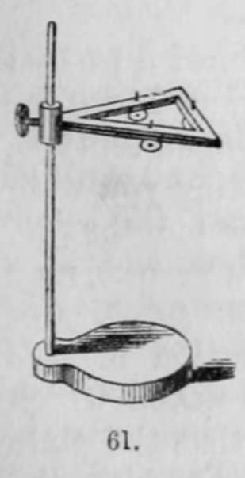
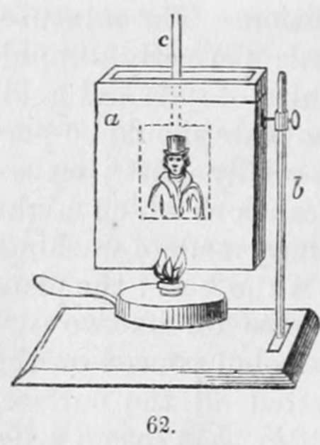

Section V. Fixing The Daguerreotype Image
Description
This section is from the book "A Manual Of Photography", by Robert Hunt. Also available from Amazon: A Manual of Photography.
Section V. Fixing The Daguerreotype Image
It has already been stated that the solution of hyposulphite of soda is the most effective agent for removing all the unchanged iodide of silver, after the application of, and the development of the image by, the mercurial vapour.
This being effected, greater permanence is given by the application of a solution of gold.
The process as described by M. Fizeau, to whom we are indebted for its introduction, is as follows:—
" Dissolve eight grains of chloride of gold in sixteen ounces of water, and thirty-two grains of hyposulphite of soda in four ounces of water : pour the solution of gold into that of the soda, a little by little, agitating between each addition. The mixture, at first slightly yellow, becomes afterwards perfectly limpid. This liquid now contains a double hyposulphite of soda and gold.
" To use this salt of gold, the surface of the plate should be perfectly free from any foreign substance, especially dust ; consequently it ought to be washed with some precautions which might be neglected if it was to be finished 1 >by the ordinary mode of washing.
" The following manner generally succeeds the best : the plate being yet iodized, and perfectly free from grease on its two surfaces and sides, should have some drops of alcohol poured on the iodized surface; when the alcohol has wetted all the surface, plunge the plate into a basin of water, and after that into a solution of hyposulphite of soda.
" This solution ought to be changed for each experiment, and to consist of about one part of the salt to fifteen of the water : the rest of the washing is done in the ordinary way, only taking care that the water should be as free as possible from dust.
" The use of the alcohol is simply to make the water adhere perfectly all over the surface of the plate, and prevent it from quitting the sides at each separate immersion, which would infallibly produce stains.
"When a picture has been washed, with these precautions, the treatment with the salt of gold is very simple. It is sufficient to place the plate on a support, fig. 61, or fig. 63, g, and pour upon its surface a sufficient quantity of the salt of gold that it may be entirely covered, and heat it with a strong spirit-lamp; the picture will be seen to brighten, and become in a minute or two of great force. When this effect is produced, the liquid should be poured off and the plate washed and dried.
"In this operation the silver is dissolved, and the gold precipitated upon the silver and mercury, but with very different results : in effect, the silver, which, by its reflection, forms the shades of the picture, is in some way darkened by the thin film of gold which covers it, from which results a strengthening of all the dark parts. The mercury, on the contrary, which, in the state of an infinite number of small globules, forms the lights, is augmented in its solidity and brightness by its union with the gold, from which results a great degree of permanency, and a remarkable increase in the lights of the picture".
The plates are then washed by means of an arrangement of this order. The apparatus represented in fig. 62 may be employed. a is a vessel sufficiently large to take the plate, and not more than half an inch wide : this is filled with distilled water, which is heated by means of a spirit-lamp; b is a stand supporting the trough, and c a holder for the plate. After the plate has been immersed for a few minutes, it is to be drawn out slowly, and by blowing on it the water is removed, and the warm metal rapidly dried. Such are the principal processes which have been adopted in the daguerreotype manipulation. Other modes for giving permanency to the daguerrean image have been adopted, but none of them have been so thoroughly successful as those.
It appears advantageous to quote a few of the modified forms of proceeding for fixing these pictures, when obtained, which have from time to time been recommended.
M. Preschot, in a letter to M. Arago, remarks— " In one of the sittings of last month you mentioned a process for fixing photogenic images on metal. Knowing, as I do, the interest you take in the beautiful discovery of the daguerreotype, I hope you will excuse the liberty I take in troubling you with results which I obtained in experiments made a few months ago.
" Photogenic images, obtained by M. Daguerre's process, may be fixed by treating them with a solution of hydrosulphite of ammonia. For this purpose, a concentrated solution of this fluid is mixed with three or four volumes of pure water, which is poured into a flat vessel, in sufficient quantity that the plate may be steeped in it horizontally, and just covered with the fluid. When, by the action of the fluid, the tints of the drawing are sufficiently changed, which occurs in less than a minute, the plate is to be withdrawn, and put into a flat vessel containing water: it is afterwards taken out and dried. By this process the polished parts of the metal are tinged gray by the sulphuret, and the amalgamated parts are not attacked, or, at least, but very little. The tints may be varied by the concentration of the fluid or the duration of the immersion ; however, too long an action turns the lights yellow. Photographic images, treated in this manner, bear rubbing with the finger without losing any of their details".
M. Choiselat proposed a plan which has been rarely acted upon, but which is well deserving of attention.
Chloride, and particularly iodide of silver, dissolved in hyposulphite of soda, may be advantageously employed for fixing the images of the daguerreotype. Steeped in these solutions, they are, under the electro-chemical influence exerted by the copper on the dissolved silver, coated with a film of silver, and thus become ineffaceable.
Instead of the hyposulphite, a mixture of iodide or bromide of potassium, holding the silver salt in solution, may be employed.
The iodide of silver best adapted for this operation is said to be that which is obtained by treating, with the aid of heat, a plate of this metal by the iodide precipitated from alcohol by water, afterwards dissolving the iodide formed and adhering to the plate in the hyposulphite.
Dr. Berres, of Vienna, assisted by Mr. F. Kratochwila, has succeeded by another process, bearing some analogy to that of M. Fizeau, in fixing the daguerreotype designs. He takes the photograph produced in the usual manner by the process of Daguerre, holds it for a few minutes over a moderately warmed nitric acid vapour, and then lays it in nitric acid of 13° or 14° Réaumur (61 1/4° or 63 1/2° Fahrenheit), in which a considerable quantity of copper or silver, or both together, has been previously dissolved. Shortly after having been placed therein, a precipitate of metal is formed, and can be changed to any degree of intensity. The photographic picture coated with metal is now removed, washed in water, cleaned, and dried ; it is then polished with chalk or magnesia, and a dry soft cloth or leather, after which the coating will become clean, clear, and transparent, so that the picture, with all its details, can again be seen.
This proceeding is of a most uncertain character—since, with every precaution, the acid solution frequently " bites" into the plate, producing an etching.
Continue to:
- prev: Section IV. To Develope The Image Formed On The Plate
- Table of Contents
- next: Section VI. Sunplification Of The Daguerreotype